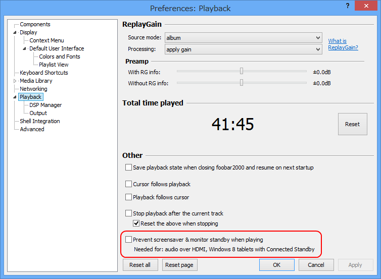
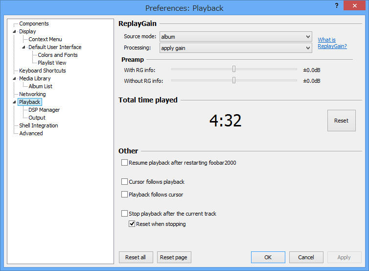
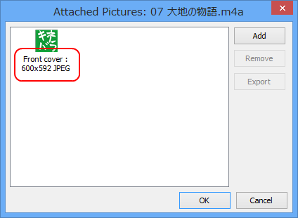
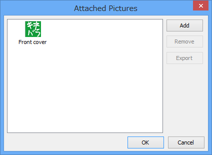

お寝坊さんと foobar2000 v1.2.6
公開日：
最近夜眠れなくて、昼に寝たくなる。昨日も夜の10時ぐらいに少しウトウトしたあと、朝の7時ぐらいまで眠れず。意識があったのはそこまでで……気が付いたら午後3時でした。ごめんなさいごめんなさい。三重のファイヤーウォール＜目覚まし＞がこうも簡単に突破されるとは。
まぁ、やっちまったのはしょうがないので、今日は家で foobar2000 v1.2.6 のアップデート内容を調べて終り。
foobar2000: Change Log1.2.6
- Windows 8 “connected standby” countermeasures:
Option to keep display up while playing - seems to be the only way to prevent Windows desktop apps from being shut down while the machine turns idle
- Fixed misbehavior when updating attached pictures in files with ID3v2.2 tags.
- ReplayGain tagging now works with AIFF.
- Fixed crashing when embedding specific picture files into Ogg Vorbis files.
- Attached picture manager dialog tweaks.
Windows 8 “connected standby” countermeasures

Option to keep display up while playing - seems to be the only way to prevent Windows desktop apps from being shut down while the machine turns idle
残念ながら“Connected Standby”に対応したデバイスが Surface RT しか手元になく（デスクトップアプリが動かねえ！）詳しい検証はできなかったのだけれど、デスクトップアプリから“Connected Standby”への移行を阻止するのはムズかしく、少しトリッキーな方法が必要なようだ。“audio over HDMI”が必要とあるのはそのせいだと思うけれど*1、“Connected Standby”対応の最新タブレットならば気にする必要はないと思われる。
ちなみに“Connected Standby”は
- ARM プロセッサ
- Clover Trail（最新 Intel Atom プロセッサ）
- Haswell（次世代 Intel Core プロセッサ）
で利用できるようだ。スリープ状態で30秒に一回ネットワーク接続を行い、Windows 8 アプリ（ストアアプリ）などからリクエストされたタスクを処理する。“Connected Standby”モードでは、デスクトップアプリはなにもできない。

ちなみに v1.2.5 の設定ダイアログ。一番下のチェックボックスがない。
Attached picture manager dialog tweaks

Attached picture manager に画像ファイルの形式と大きさが表示されるようになった。

ちなみに v1.2.5 のダイアログ。バージョン履歴に書いてなければ絶対気付かないことだ。
*1:知らんけど